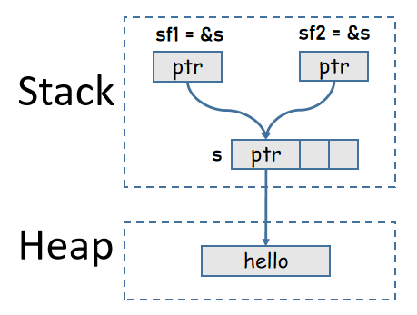

引用和所有權借用
所有權不僅可以轉移(原變量會丟失數據的所有權)，還可以通過引用的方式來借用數據的所有權(borrow ownership)。
使用引用借用變量所有權時，【借完】之後會自動交還所有權，從而使得原變量不丟失所有權。至於什麼時候【借完】，尚無法在此深究。
例如：
fn main(){ { let s = String::from("hello"); let sf1 = &s; // 借用 let sf2 = &s; // 再次借用 println!("{}, {}, {}",s, sf1, sf2); } // sf2離開，sf1離開，s離開 }
注意，&s表示創建變量s的引用，為某個變量創建引用的過程不會轉移該變量所擁有的所有權。

(不可變)引用實現了Copy Trait，因此下面的代碼是等價的：
#![allow(unused)] fn main() { // 多次創建s的引用，並將它們賦值給不同變量 let sf1 = &s; let sf2 = &s; // 拷貝sf1，使得sf2也引用s， // 但sf1是引用，是可Copy的，因此sf1仍然有效，即仍然指向數據 let sf1 = &s; let sf2 = sf1; }
還可以將變量的引用傳遞給函數的參數，從而保證在調用函數時變量不會丟失所有權。
fn main(){ let s = String::from("hello"); let s1 = s.clone(); // s1丟失所有權，s1將回到未初始化狀態 f1(s1); // println!("{}", s1); // 傳遞s的引用，借用s所有權 let l = f2(&s); // 交還所有權 // s仍然可用 println!("{} size: {}", s, l); } fn f1(s: String){ println!("{}", s); } fn f2(s: &String)->usize{ s.len() // len()返回值類型是usize }
可變引用和不可變引用的所有權規則
變量的引用分為可變引用&mut var和不可變引用&var，站在所有權借用的角度來看，可變引用表示的是可變借用，不可變引用表示的是不可變借用。
- 不可變借用：借用只讀權，不允許修改其引用的數據
- 可變引用：借用可寫權(包括可讀權)，允許修改其引用的數據
- 多個不可變引用可共存(可同時讀)
- 可變引用具有排他性，在有可變引用時，不允許存在該數據的其他可變和不可變引用
- 這樣的說法不準確，短短几句話也無法描述清楚，因此留在後面再詳細解釋
前面示例中f2(&s)傳遞的是變量s的不可變引用&s，即借用了數據的只讀權，因此無法在函數內部修改其引用的數據值。
如要使用可變引用去修改數據值，要求：
- var的變量可變，即
let mut var = xxx - var的引用可變，即
let varf = &mut var
例如：
fn main(){ let mut x = String::from("junmajinlong"); let x_ref = &mut x; // 借用s的可寫權 x_ref.push_str(".com"); println!("{}", x); let mut s = String::from("hello"); f1(&mut s); // 借用s的可寫權 println!("{}", s); } fn f1(s: &mut String){ s.push_str("world"); }
容器集合類型的所有權規則
前面所介紹的都是標量類型的所有權規則，此處再簡單解釋一下容器類型(比如tuple/array/vec/struct/enum等)的所有權。
容器類型中可能包含棧中數據值(特指實現了Copy的類型)，也可能包含堆中數據值(特指未實現Copy的類型)。例如：
#![allow(unused)] fn main() { let tup = (5, String::from("hello")); }
容器變量擁有容器中所有元素值的所有權。
因此，當上面tup的第二個元素的所有權轉移之後，tup將不再擁有它的所有權，這個元素將不可使用，tup自身也不可使用，但仍然可以使用tup的第一個元素。
#![allow(unused)] fn main() { let tup = (5, String::from("hello")); // 5拷貝後賦值給x，tup仍有該元素的所有權 // 字符串所有權轉移給y，tup丟失該元素所有權 let (x, y) = tup; println!("{},{}", x, y); // 正確 println!("{}", tup.0); // 正確 println!("{}", tup.1); // 錯誤 println!("{:?}", tup); // 錯誤 }
如果想要讓原始容器變量繼續可用，要麼忽略那些沒有實現Copy的堆中數據，要麼clone()拷貝堆中數據後再borrow，又或者可以引用該元素。
#![allow(unused)] fn main() { // 方式一：忽略 let (x, _) = tup; println!("{}", tup.1); // 正確 // 方式二：clone let (x, y) = tup.clone(); println!("{}", tup.1); // 正確 // 方式三：引用 let (x, ref y) = tup; println!("{}", tup.1); // 正確 }